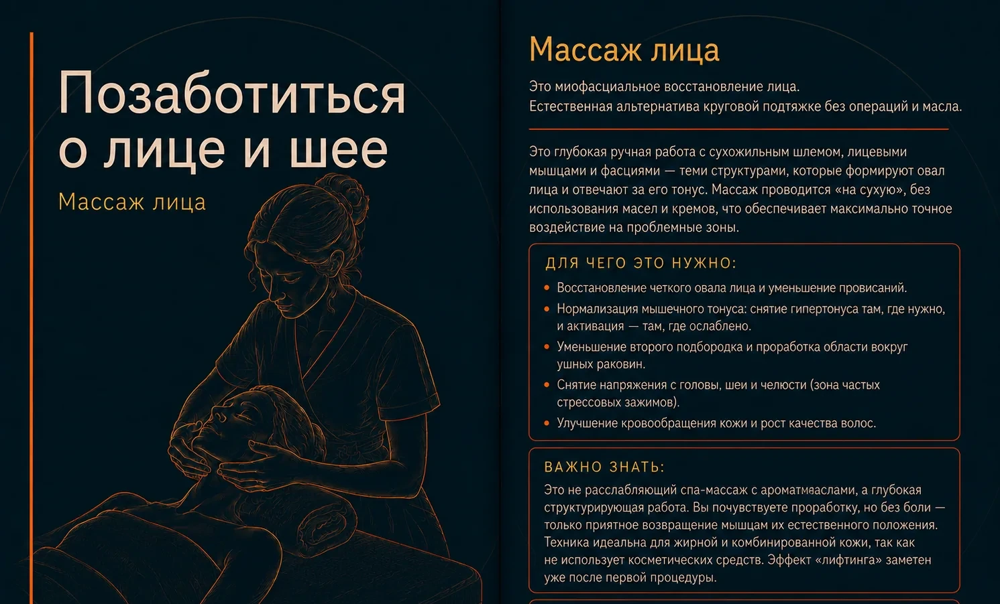

Массаж лица во Владивостоке
Позаботиться о лице и шее
Миофасциальная работа с лицом, шеей, жевательными зонами и сухожильным шлемом.

О процедуре
Массаж лица
Миофасциальная работа с лицом, шеей, жевательными мышцами и сухожильным шлемом. Процедура проводится преимущественно без масла, чтобы точнее работать с тканями.
Цель — снизить ощущение напряжения, улучшить подвижность мягких тканей и поддержать естественный тонус.
Как проходит
Специалист последовательно работает с кожей головы, шеей, жевательными мышцами и фасциями лица. Давление подбирается так, чтобы процедура ощущалась глубоко, но комфортно.
Для чего выбирают
- Снижение напряжения в области челюсти, шеи и лица
- Работа с ощущением отёчности и усталости лица
- Поддержка более свежего и собранного внешнего вида
- Расслабление кожи головы и жевательных мышц
Важно знать
Это структурная, а не просто спа-процедура. Эффект и ощущения индивидуальны; корректнее оценивать динамику после курса, а не обещать мгновенный лифтинг.
Когда процедуру лучше перенести или согласовать с врачом
- Острые воспаления кожи и герпес
- Свежие травмы или операции в области лица и шеи
- Недавние инъекции и косметологические процедуры — срок согласовать с врачом или косметологом
Визуальная памятка
Памятка о процедуре

Сравнить


{kind=link}